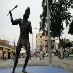

Presentacion
El municipio de Jamundi está conformado por los ecosistemas de selva andina,sub andina y selva seca. Existen tres sistemas hidrográficos de importancia como son el río Jamundí, Claro y Timba los dos primeros nacen en el Parque Nacional Natural Farallones de Cali,y generan una red de tributarios importantes por su cobertura y significancia ambiental, este sistema hidrográfico tiene un total de 63.249 hectáreas, de las cuales un 32% corresponden a una zona plana, un 47% pertenecen a la cordillera y un 21 % corresponden al Parque Nacional Natural Farallones. for Free CSS Templates. The picture in this template is from PDPhoto.org. This free template is released under a Creative Commons Attributions 2.5 license, so you’ :)
Sed lacus. .